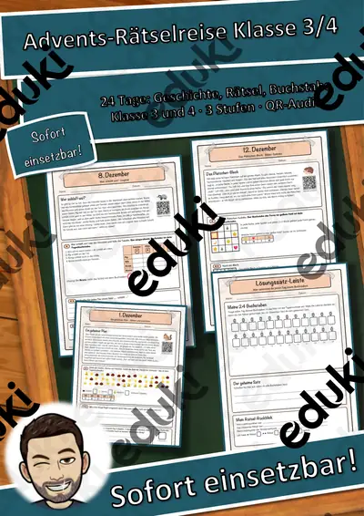
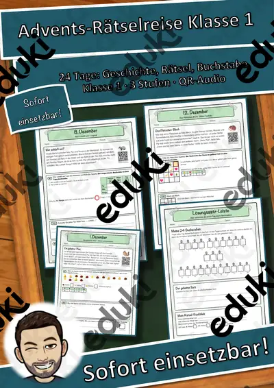

Knobel-Adventskalender: 24 Rätsel mit Lösungsbuchstaben und Geheimsatz, Klasse 2–3 (+4 Wdh.)
Hinter jedem der 24 Türchen wartet ein Rätsel. Wer es löst, findet einen Lösungsbuchstaben und trägt ihn in das Kalenderblatt ein. Am 24. Dezember steht dort ein Geheimsatz. Mathe-, Deutsch- und Knobelrätsel wechseln sich ab, alle Lösungen sind dabei.
Einsatz im Unterricht: Adventszeit, Morgenritual, Wochenplan, Vertretungsstunde. Alle Lösungen sind dabei, die Vorbereitung ist ein Ausdruck pro Tag.
Texte KI-gestützt und von mir geprüft. Die Bilder sind eigene KI-gestützte Zeichnungen (keine Fotos).
Enthalten (43 Seiten): Kalenderblatt mit 24 Türchen und Geheimsatz-Feldern · 12 Mathe-Rätsel, jedes in 2 Stufen (24 Seiten) · 6 Deutsch-Rätsel: Außenseiter, Reim, Gegenteil, Lesen · 6 Knobel-Rätsel: Zählen, Schatten, Muster · Lösungsseite für die Lehrkraft · Urkunde „Geheimsatz geknackt“
Ähnliche Materialien

Advents-Rätselreise Materialpaket Klasse 1–4: 3 Adventskalender mit Geschichten + Rätseln in 3 Stufen, QR-Audio

Advents-Rätselreise Klasse 3/4 – Adventskalender: 24 Geschichten + Rätsel in 3 Stufen mit Lösungssatz

Advents-Rätselreise Klasse 2 – Adventskalender: 24 Geschichten + Rätsel in 3 Stufen mit Lösungssatz

Adventskalender-Vorlage für die Klasse: 24 Türchen, Ideenkarten und Plan (Klasse 1–4)

Advents-Rätselreise Klasse 1 – Adventskalender: 24 Geschichten + Rätsel in 3 Stufen mit Lösungssatz

Advents-Ideen Gesamtpaket: 11 Materialien für die Adventszeit, Klasse 1–4

Advents-Häuserstadt – Klassen-Adventskalender zum Basteln mit 24 Adventsaufgaben, 3-fach differenziert (Klasse 1–4)